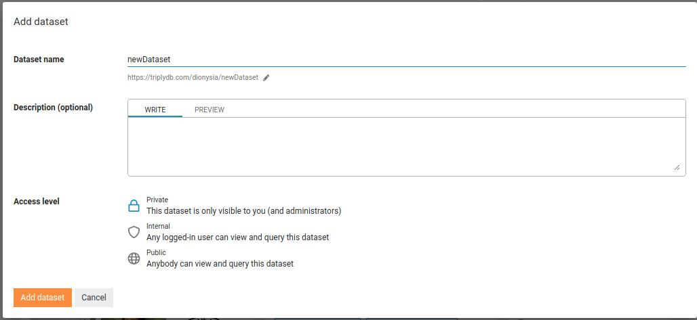
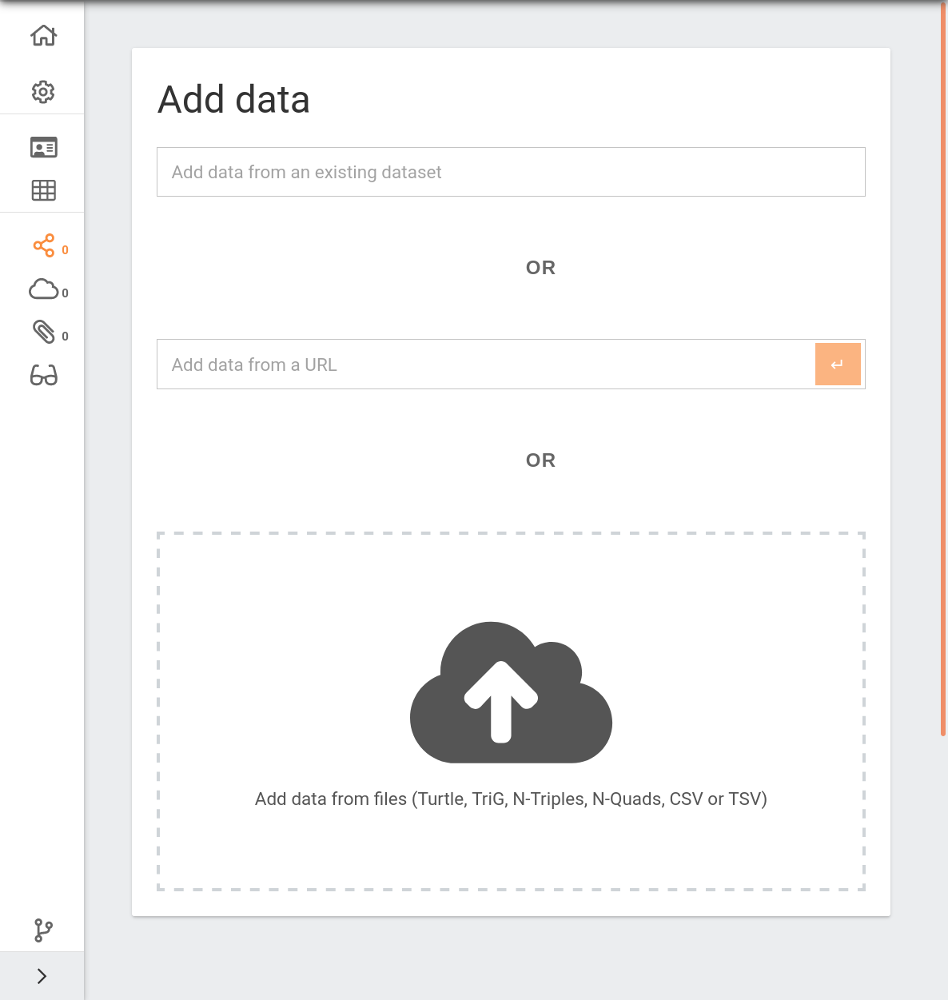
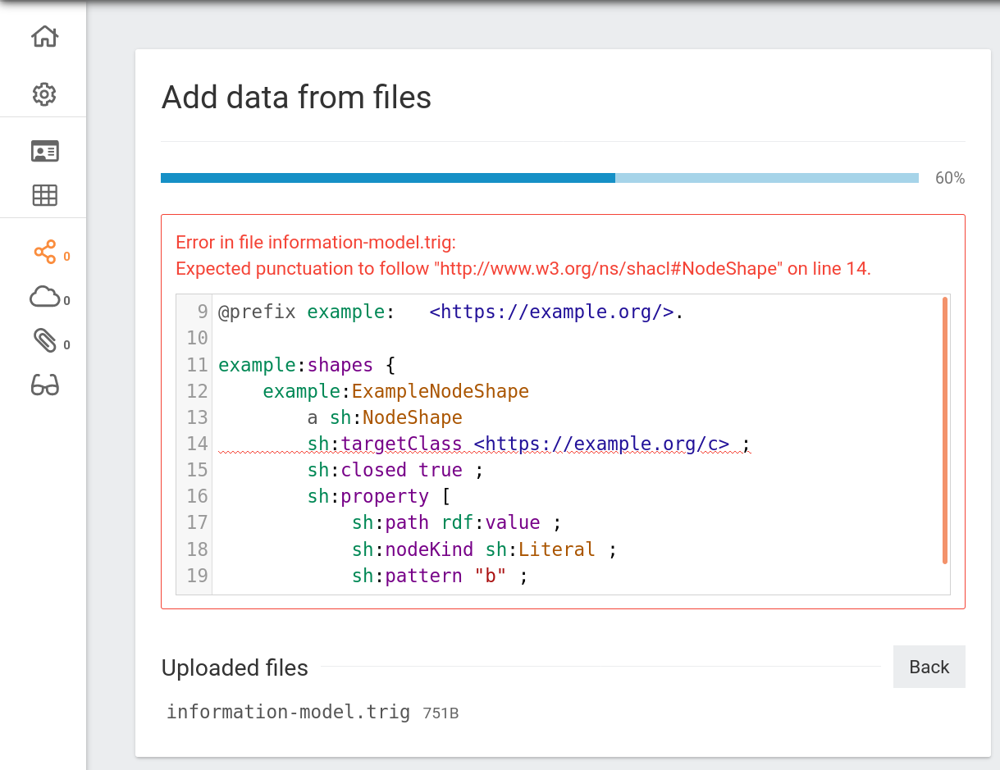

Uploading Data¶
This section explains how to create a linked dataset in TriplyDB.
Creating a new dataset¶
The following steps allow a new linked datasets to be created:
-
Log into a TriplyDB instance.
-
Click the
+button on the dataset pane that appears on the right-hand side of the home screen. -
This brings up the dialog for creating a new dataset. Enter a dataset name that consists of alpha-numeric characters (
A-Za-z0-9) and hyphens (-). -
Optionally, enter a dataset display name. This name will be used in the GUI and will be exposed in dataset metadata.
-
Optionally, enter a dataset description. You can use rich text formatting by using Markdown. See our section about Markdown for details.
-
Optionally, change the access level for the dataset. By default this is set to “Private”. See dataset access levels for more information.

When datasets are Public (see Access Levels), they automatically expose metadata and are automatically crawled and indexed by popular search engines (see Metadata).
Adding data¶
Once the dataset is created, the “Add data” view is displayed (see screenshot). In this view data can be added in three ways:
- File upload
- Select files from your local machine. It is also possible to drag-and-drop local files on the cloud icon with the upward pointing arrow.
- URL upload
- Copy/paste a URL that points to an online RDF file.
- Import
- Import a dataset that is already published in the same TriplyDB instance.

The “Add data” view is also available for existing datasets:
-
Go to the “Graphs” view by clicking on the graph icon in the left-hand sidebar.
-
Click the “Import a new graph” button.
Adding data: File upload¶
The file upload feature allows you to upload RDF files from your local machine. This can be done in either of two ways:
-
Click on the cloud icons to open a dialog that allows local RDF files from your machine to be selected.
-
Drag-and-drop RDF files from your local machine onto the cloud icon.
The following RDF serialization formats are currently supported:
| Serialization Format | File extension |
|---|---|
| N-Quads | .nq |
| N-Triples | .nt |
| RDF/XML | .rdf, .owl, .owx |
| TriG | .trig |
| Turtle | .ttl, .n3 |
| JSON-LD | .jsonld, .json |
Up to 1,000 separate files can be uploaded in one go. It is also possible to upload compressed files and archives. When the number of files exceeds 1,000, it is more efficient to combine them in archives and upload those. This allows an arbitrary number of files to be uploaded. The following archive/compression formats are currently supported:
| Format | File extensions |
|---|---|
| gzip | .gz |
| bzip2 | .bz2 |
| tar | tar |
| XZ | .xz |
| ZIP | .zip |
Adding data by URL upload¶
The second option for adding data is to include it from an online URL location. This is done by entering the URL inside the “Add data from a URL” text field.
Adding data by import¶
The third option for adding data is to import from datasets that are published in the same TriplyDB instance. This is done with the “Add data from an existing dataset” dropdown list (see screenshot).
Adding malformed data¶
TriplyDB only allows valid RDF data to be added. If data is malformed, TriplyDB will show an error message that indicates which part of the RDF data is malformed (see screenshot). If such malformed data is encountered, the RDF file must first be corrected and uploaded again.

TriplyDB follows the linked data standards strictly. Many triple stores allow incorrect RDF data to be added. This may seem convenient during the loading phase, but often results in errors when standards-compliant tools start using the data.
Assets: binary data¶
Not all data can be stored as RDF data. For example images and video files use a binary format. Such files can also be stored in TriplyDB and can be integrated into the Knowledge Graph.